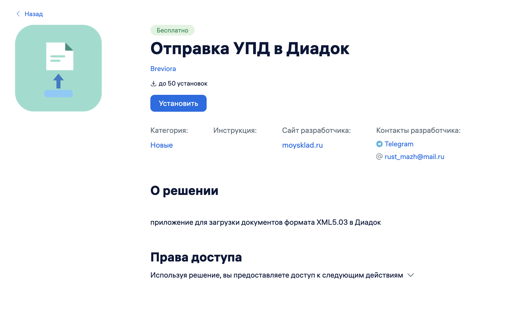
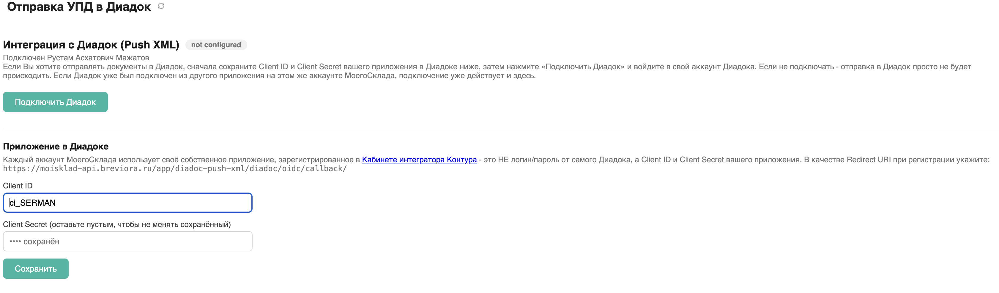
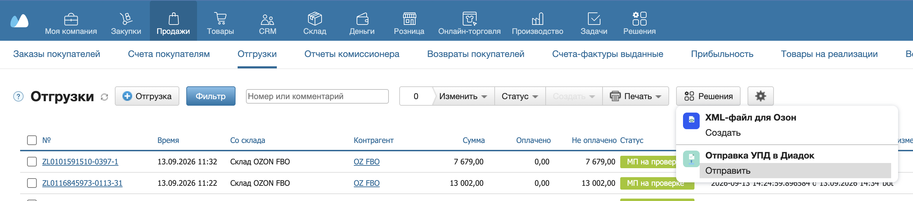
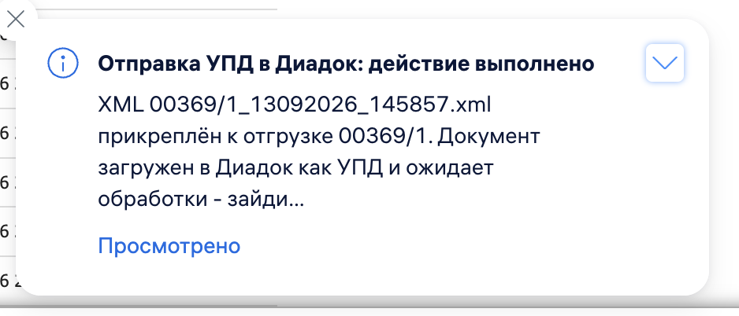

Отправка УПД в Диадок
Кнопка на Отгрузке формирует стандартный УПД из документа МойСклад и отправляет его в Контур.Диадок как черновик на подпись.
1 Установите решение
Откройте каталог приложений в МойСклад, найдите «Отправка УПД в Диадок» и нажмите «Установить».

2 Подключите Диадок
Откройте настройки решения и нажмите «Подключить Диадок», затем авторизуйтесь в своём аккаунте Контур.Диадок. Без этого шага XML прикрепляется в МойСклад, но не уходит в Диадок.

3 Нажмите кнопку на Отгрузке
Откройте нужную Отгрузку и нажмите «Отправить». Решение сформирует УПД, прикрепит его к документу и отправит в Диадок.

4 Готово
Появится уведомление об отправке. В Диадок документ попадёт как черновик — подпишите и отправьте его контрагенту в веб-интерфейсе Диадока.
